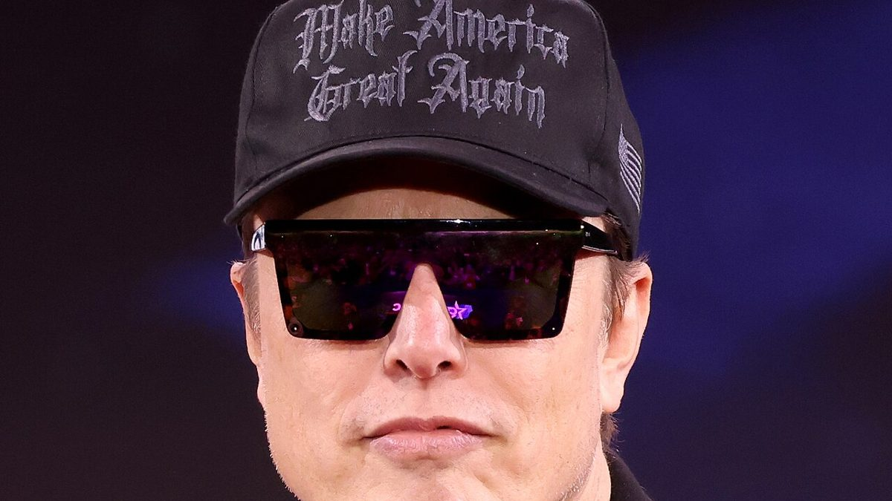

Musk aporta 158 millones de dólares a la carrera por el Senado en Texas para respaldar a Paxton
Los registros federales publicados el jueves muestran que Elon Musk entregó 158 millones de dólares en septiembre al principal super PAC republicano del Senado. El dinero pasó en un día, en cada caso, a un grupo de Texas que respalda a Ken Paxton frente a James Talarico.

Puntos clave
- Elon Musk entregó 158 millones de dólares en septiembre al Senate Leadership Fund, el principal super PAC que respalda a los candidatos republicanos al Senado, según los registros del tercer…
- El informe del fondo muestra dos donaciones de Musk: 75 millones de dólares el 9 de septiembre y 83 millones el 23 de septiembre.
- Las aportaciones de Musk no terminaron ahí.
Elon Musk entregó 158 millones de dólares en septiembre al Senate Leadership Fund, el principal super PAC que respalda a los candidatos republicanos al Senado, según los registros del tercer trimestre presentados ante la Comisión Federal de Elecciones y publicados el jueves. Casi todo el dinero fue directamente a Texas, donde el republicano Ken Paxton mantiene una carrera cerrada por el Senado contra el demócrata James Talarico.
El rastro del dinero
El informe del fondo muestra dos donaciones de Musk: 75 millones de dólares el 9 de septiembre y 83 millones el 23 de septiembre. Un día después de cada donación, el fondo envió la misma cantidad a Texas PAC, un grupo creado para la carrera de Texas que respalda a Paxton y ataca a Talarico. Las dos aportaciones sumaron más de la mitad de todo lo que el Senate Leadership Fund recibió de donantes en el trimestre, y figuran entre las donaciones políticas individuales más grandes jamás registradas en Estados Unidos.
Las aportaciones de Musk no terminaron ahí. Associated Press informó que también entregó 10 millones de dólares a Lone Star Liberty PAC, otro grupo que apoya a Paxton, y más de 80 millones en el trimestre a America PAC, el grupo político que fundó y que fue su principal vehículo en 2024.
Un trimestre récord para los republicanos del Senado
El Senate Leadership Fund recaudó 272,9 millones de dólares entre julio y septiembre, el mayor trimestre de su historia, y llegó a las últimas semanas antes de las elecciones de mitad de mandato del 3 de noviembre con más de 155 millones en efectivo. Los republicanos tienen una mayoría de 53 escaños en el Senado y la defienden en un mapa difícil. El grupo demócrata equivalente, Senate Majority PAC, dijo que recaudó una cifra récord de 151 millones en el mismo trimestre y cerró septiembre con 111,8 millones en efectivo, aunque su propio registro aún no era público.
El dinero de Musk se notó rápido en la publicidad. Texas PAC gastó más de 77 millones de dólares en anuncios solo en septiembre, según datos de AdImpact citados por CNN, y su gasto y reservas en apoyo de Paxton llegan a casi 160 millones hasta el día de las elecciones. El gasto total en publicidad en la carrera de Texas ya superó los 500 millones de dólares.
El otro lado de las cuentas
A Talarico tampoco le falta dinero. Su campaña dijo que recaudó 64 millones de dólares en el tercer trimestre, la mayor recaudación trimestral jamás registrada por un candidato al Senado. La marca anterior era de 57,9 millones, fijada por Jaime Harrison, de Carolina del Sur, en 2020. La campaña de Talarico dijo que ha recaudado más de 134,3 millones desde su lanzamiento en septiembre de 2025, la mayor parte en donaciones pequeñas. La campaña de Paxton y sus comités vinculados recaudaron 18 millones en el trimestre. En un acto en San Marcos el jueves, Talarico presentó su campaña como un David frente a un rival mucho más rico.
El escaño lo ocupa el senador republicano John Cornyn. Una encuesta de Marist publicada esta semana situó a Talarico con 47 por ciento y a Paxton con 45 por ciento, dentro del margen de error. El presidente Donald Trump ha hecho campaña en Texas por Paxton, incluido un acto el 7 de octubre en San Antonio.
Musk vive en Texas. SpaceX, Tesla y X operan a gran escala en el estado, y en 2024 trasladó allí las sedes de X y SpaceX desde California. Ese año gastó más de 250 millones de dólares en apoyo del regreso de Trump a la Casa Blanca. Los registros muestran que ahora también es el mayor donante republicano en la pelea por el Senado, y Texas es el destino de la mayor parte de ese dinero.
Fuentes
CNN, Associated Press vía WSGW, Associated Press vía Reflector, The Guardian vía The Bull Post
Cronología
- Sep 9, 2026Elon Musk dona 75 millones de dólares al Senate Leadership Fund, según el registro del tercer trimestre del fondo.
- Sep 23, 2026Musk dona otros 83 millones al fondo, con lo que su total de septiembre llega a 158 millones.
- Oct 15, 2026Los registros del tercer trimestre de la Comisión Federal de Elecciones se hacen públicos y revelan el tamaño de las donaciones de Musk.
Fuentes
- CNN: Musk contributed more than $150 million to bolster GOP in Texas Senate race, filings show
- Associated Press via WSGW: Musk donates over $150 million to Senate GOP group, assisting Paxton
- Associated Press via Reflector: Talarico compares his campaign to the biblical David after GOP invests over $158M against him
- The Guardian via The Bull Post: Paxton v Talarico, tens of millions of dollars pour into closely watched Texas Senate race